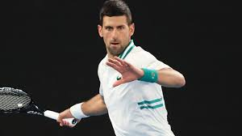
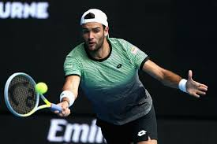
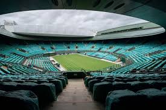

Tennis, Australian Open: Djokovic vince il match n° 300 negli Slam
Il serbo si sbarazza di Raonic in quattro set e vola ai quarti: l'infortunio all'addome sembra essere ormai superato
Berrettini infortunato: niente ottavi contro Tsitsipas
Il tennista romano alza bandiera bianca per uno strappo agli addominali: “I medici mi hanno detto che avrei peggiorato la situazione”
Continua a leggere... Wimbledon si prepara al ritorno: pronte misure di sicurezza eccezionali
Lo storico impianto dell’All England Tennis Club si prepara a riaccogliere giocatori e spettatori a partire dal prossimo giugno. Il terzo Slam stagionale, dopo lo stop forzato dello scorso anno a causa dell’insostenibile andamento della pandemia in Europa, è pronto a mettere in campo misure di sicurezza eccezionali per garantire a tennisti, appassionati e addetti ai lavori di presenziare all’evento del calendario più atteso dell’anno.
Continua a leggere... Lo sai che...
Gli incontri di tennis durano fino al raggiungimento di un certo punteggio e non sono limitati temporalmente, quindi possono andare avanti molte ore. Ad oggi il record per il match più lungo va all’incontro tra Nicolas Mahut e John Isner, durante il primo turno dell’edizione di Wimbledon 2010, che durò 11 ore e 5 minuti e che vide trionfare l’americano Isner.